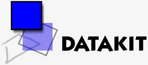

|
 DATAKIT tarafýndan geliþtirilen DETK (Data Exchange Tool Kit)
yazýlýmý CAD/CAM sistemleri ve bunlar için hazýrlanmýþ kütüphaneler
arasýnda dosya deðiþim aracý olarak kullanýlan transfer dosyasý
aracýdýr. DATAKIT katý model, yüzeyler, wireframe, component,
montaj (assembly) yapýsý, features, çizimler, herhangi geometri
özelliði ve feature ölçüleri, tolerans datalarý gibi her çeþit
geometri ve topolojinin dönüþtürülmesini destekler.
DATAKIT tarafýndan geliþtirilen DETK (Data Exchange Tool Kit)
yazýlýmý CAD/CAM sistemleri ve bunlar için hazýrlanmýþ kütüphaneler
arasýnda dosya deðiþim aracý olarak kullanýlan transfer dosyasý
aracýdýr. DATAKIT katý model, yüzeyler, wireframe, component,
montaj (assembly) yapýsý, features, çizimler, herhangi geometri
özelliði ve feature ölçüleri, tolerans datalarý gibi her çeþit
geometri ve topolojinin dönüþtürülmesini destekler.
NÖTRAL
FORMATTA VERÝ TRANSFER ORTAMI
Üreticilerin
amaçlarýndan biri de, verinin nümerisazyonu olarak adlandýrýlan,
verimliliði artýrmak için yapýlan tasarým-üretim iþleminin
optimizasyonudur. Ekipmanlardaki farklýlýk ve CAD/CAM yazýlým
türlerinin çok olmasý sistemler arasý haberleþmeyi zorlaþtýrmaktadýr.
Bu zorluk sadece birden fazla sistem kullanan bir þirket içinde
deðil ayný zamanda birden çok endüstriyel ortaða sahip bir
þirket içinde de görülebilir. Baþlýca alýcýlarýn doðal format
talebi, þirketleri birçok farklý sistemi benimsemeye yönlendirmektedir.
Edinme, bakým ve eðitim maliyetleri, harcamalarýn finansal
aðýrlýðýnda büyük bir yer kaplamaktadýr. Nötral arayüzlerin
uygunluðu ilginç bir þekilde para tasarrufu saðlamakta ve
büyük bir ekonomik rol oynamaktadýr.
Nötral formattaki veri transferlerinin üçte biri, kullanýcý
tarafýndan dosyalarýn elle düzeltilmesini gerektirmektedir.
CAD/CAM satýcýlarýnýn nötral formatlar için iyi kalitede arayüzler
üretme çabalarýna raðmen, endüstriyel kullanýmda hala birçok
güçlükle karþýlaþýlmaktadýr. Bu güçlükleri þöyle sýralayabiliriz:
- Ortam
zorluklarý
- Çalýþtýrma
zorluklarý
- Bazý
arayüzlerde adreslenemeyen alanlar
- Zayýf
anlama kabiliyeti ve zayýf standart uyumu
- Arayüzlerin
kötü kalitede olmasý
- Ýki
iletiþim sisteminin arayüzleri arasýndaki alanlarýn üst
üste binme eksiklði
- Kaynak
kodlarýnýn kontrol eksikliði.
DATAKIT VE ÜRETÝCÝLER
- DATAKIT,
sistemler arasýnda data entegrasyonunu saðlayamayan arayüzlerine
sahip üreticiler için uygulanabilir.
- Entiti
filtreleme kabiliyeti ve azaltma veri algoritmalarý verimliliði
sayesinde DATAKIT yazýlýmý zamandan tasarruf saðlar.
- DATAKIT
verimliliði artýrýr ve uyumlu mühendisliðe de kolaylýk saðlamakta
katkýda bulunur.
- DATAKITATAKIT
müþteri-satýcý iliþkilerinin geliþtirilmesine ve firma verimliliðinin
artýrýlmasýna katkýda bulunur.
DATAKIT VE CAD/CAM PROFESYONELLERÝ
-
DATAKIT, kendi ürün çeþitliliði içinde bir veya tüm bir
parça için etkili arayüzlerden yararlanmak isteyen CAD editörleri
için uygundur.
- DATAKIT
çözümlerini daðýtmak için profesyonellere yeni imkanlar
sunar ve kendi ayýrt edici noktalarýna konsantre olmaya
imkan verir.
- DATAKIT
veri transferlerindeki doðal zorluklarý kaldýrarak yeni
market paylaþýmlarýnýn kazanýlmasýný kolaylaþtýrýr ve bunu
da özellikle CAD ortamýnýn heterojen olduðu büyük endüstriyel
deðerler içinde baþarýr
- DETK
(Data Exchange Tool Kit), AutoCAD, Bravo, Cadds, Cadkey
(KeycCreator), CATIA, Draftmaker, EMS, Euclid, ThinkDesign,
GMS, Goelan, Ideas, Mechanical Desktop, Medusa, Microstation,
Pro/ENGINEER, Smartcam, SolidDesigner, SolidEdge, SolidWorks,
Strim, Tell, Topcad, Unigraphics, X-CAD ve diðer birçok
CAD/CAM/CAE program dosyalarý arasýnda transfer yapabilmektedir.
Daha
fazla bilgi için: www.datakit.com
Ýrtibat:
MET
CAD/CAM Müh. ve Bil. Sis. San. Tic. Ltd. Þti.
Tel : (312) 478 72 07 (Pbx)
www.metbil.com.tr
info@metbil.com.tr
|